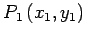
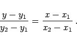

Inhalt Index DeskTop Bronstein

 Geometrie Vektoralgebra und analytische Geometrie Analytische Geometrie der Ebene Gerade
Geometrie Vektoralgebra und analytische Geometrie Analytische Geometrie der Ebene Gerade


Jede in den Koordinaten lineare Gleichung definiert eine Gerade, und umgekehrt ist die Gleichung jeder beliebigen Geraden eine lineare Gleichung ersten Grades.
| (3.322) |
Für A = 0 ist die Gerade eine Parallele zur x-Achse, für B = 0 eine Parallele zur y-Achse, für C = 0 verläuft die Gerade durch den Koordinatenursprung.
Jede Gerade, die nicht parallel zur y-Achse verläuft, kann durch eine Gleichung der Form
| (3.323) |
dargestellt werden. Die Größe k wird Richtungskoeffizient der Geraden genannt; er ist gleich dem Tangens des Winkels, den die Gerade mit der positiven Richtung der x-Achse einschließt.
Die Strecke b wird von der Geraden auf der y-Achse abgeschnitten. Sie kann ebenso wie der Tangens je nach Lage unterschiedliches Vorzeichen besitzen.
Die Gleichung einer Geraden, welche durch einen vorgegebenen Punkt  in vorgegebener Richtung verläuft, lautet
| (3.324) |
Sind zwei Geradenpunkte , und vorgegeben, dann lautet die Geradengleichung
|  | (3.325) |
Wenn eine Gerade auf den Achsen jeweils die Strecken a und b abschneidet, wobei die Vorzeichen zu berücksichtigen sind, dann lautet ihre Gleichung
| (3.326) |
Mit p als Abstand der Geraden vom Koordinatenursprung und  als der Winkel, den die x-Achse und die vom Koordinatenursprung auf die Gerade gefällte Normale einschließen, mit p > 0 und lautet die HESSEsche Normalform
als der Winkel, den die x-Achse und die vom Koordinatenursprung auf die Gerade gefällte Normale einschließen, mit p > 0 und lautet die HESSEsche Normalform
| (3.327) |
Man kann die HESSEsche Normalform aus der allgemeinen Geradengleichung durch Multiplikation mit dem Normierungsfaktor
| (3.328) |
herleiten. Das Vorzeichen von  muß entgegengesetzt zu dem von C gewählt werden.
muß entgegengesetzt zu dem von C gewählt werden.
Mit p als Abstand vom Pol zur Geraden (Normalenstrecke vom Pol zur Geraden) und  als Winkel zwischen Polarachse und der vom Pol auf die Gerade gefällten Normalen gilt
als Winkel zwischen Polarachse und der vom Pol auf die Gerade gefällten Normalen gilt
| (3.329) |